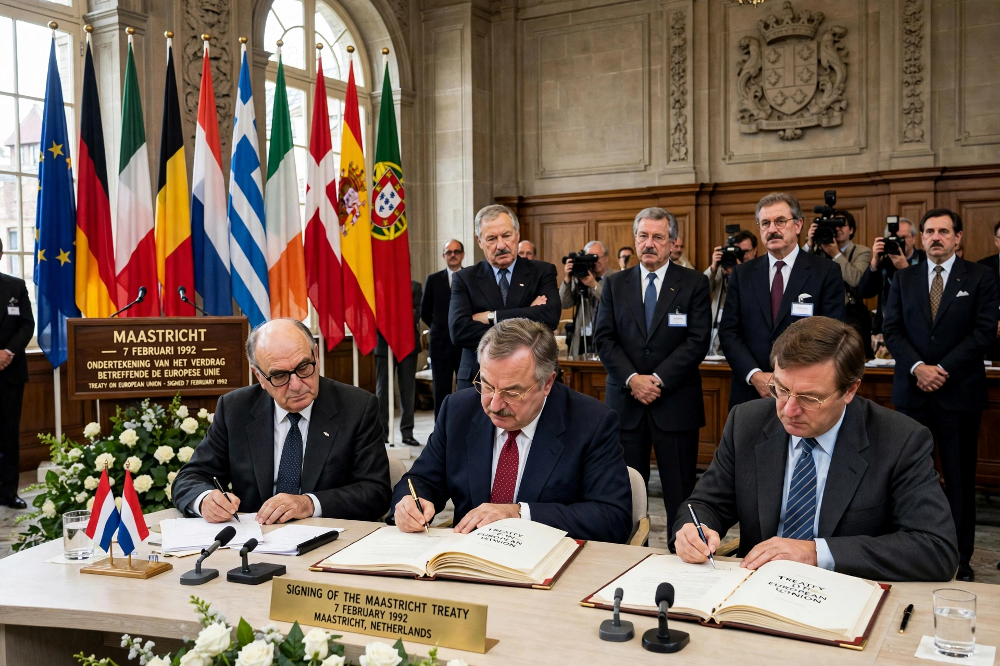

| Signed | 7 February 1992, Maastricht, Netherlands |
|---|---|
| Effective | 1 November 1993 |
| Parties | 12 member states of the European Communities |
| Full name | Treaty on European Union |
The Treaty on European Union, commonly known as the Maastricht Treaty, is the foundation treaty of the European Union (EU). Signed on 7 February 1992 in Maastricht and in force from 1 November 1993, it transformed the European Communities into the European Union.
The treaty created EU citizenship, established the three-pillar structure (European Communities, Common Foreign and Security Policy, and Justice and Home Affairs), and set the timetable and convergence criteria for Economic and Monetary Union leading to the euro. It expanded co-decision for the European Parliament and introduced subsidiarity as a principle.
Ratification was difficult: Danish voters first rejected it in 1992, approving it in 1993 after opt-outs; French voters approved narrowly. It was later amended by the Treaties of Amsterdam, Nice and Lisbon.